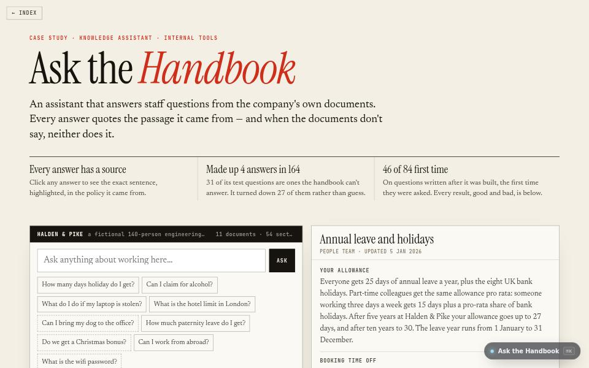

AI product · about 4 min · The Product Archipelago
Ask the Handbook
A knowledge assistant that answers staff questions from company documents, quotes its source, and says “the handbook doesn’t say” rather than guess.

The problem
Staff ask HR the same questions all day, and an assistant that guesses at policy is worse than none.
What it does
- Every answer is a sentence from the documents, shown with its source
- Says “the handbook doesn’t say” and points to the nearest thing it does cover
- Paste in your own documents; unanswered questions become a gaps list for whoever writes the policies
The most interesting decision
An answer is a sentence from the documents
Nothing writes new prose about a policy, so nothing can state a policy that does not exist. What is left to go wrong is picking the wrong sentence, and that can be measured: 4 made-up answers in 164 test questions.
Built with
- BM25 over every sentence
- Porter stemmer, written out
- Concept synonyms
- On-device embeddings
- Refusal rules
Evidence
4 answers made up in 164 test questions, 31 of them unanswerable on purpose. Read its tests
Its world
A library of stacked handbooks. The open one shines a single quoted line into the sky.